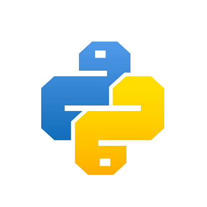
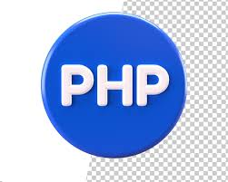
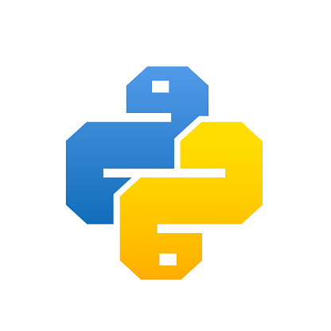
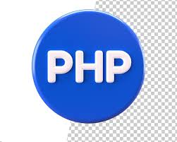

Aqui estão alguns conceitos fundamentais para entender a introdução à programação:
Linguagens de Programação:
Existem muitas linguagens de programação, cada uma com suas próprias sintaxes e usos. Exemplos incluem Python, Java, C++, JavaScript, e muitas outras. Algumas linguagens são mais fáceis de aprender para iniciantes (como Python) devido à sua sintaxe mais simples e legível.
Algoritmos:
Um algoritmo é uma sequência de passos ou instruções que resolvem um problema específico ou realizam uma tarefa. Pensar em termos de algoritmos é crucial para resolver problemas de programação de forma eficiente.
Estrutura de Controle:
Sequência: A execução de instruções uma após a outra. Decisão: Instruções que permitem que o programa escolha entre diferentes caminhos (ex.: if, else). Repetição: Instruções que permitem que o programa execute uma série de instruções repetidamente (ex.: loops como for, while).
Variáveis e Tipos de Dados:
Variáveis são usadas para armazenar dados que podem ser manipulados pelo programa. Tipos de dados são as diferentes categorias de dados que uma linguagem de programação pode manipular, como números inteiros, números de ponto flutuante, caracteres, strings, e booleanos.
Funções:
Funções são blocos de código reutilizáveis que executam uma tarefa específica. Elas podem receber parâmetros (dados de entrada) e retornar valores (dados de saída).
Depuração e Teste:
Depuração é o processo de encontrar e corrigir erros no código. Testar o código envolve garantir que ele funcione conforme o esperado em diferentes cenários e condições.
Ambiente de Desenvolvimento
Um ambiente de desenvolvimento integrado (IDE) é uma ferramenta que fornece facilidades para o desenvolvimento de software, como editores de código, ferramentas de depuração, e gestores de projetos. Exemplos incluem Visual Studio Code, PyCharm, e Eclipse.
Introdução à programação é o ponto de partida para quem deseja aprender a criar software. Programação é o processo de escrever instruções que um computador pode seguir para realizar uma tarefa específica. Essas instruções são escritas em linguagens de programação, que são conjuntos de regras e sintaxe que permitem aos programadores comunicar-se com os computadores.